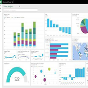

Services
SQL Server

SQL Server, developed by Microsoft, is a relational database management system (RDBMS) that provides a comprehensive and integrated platform for managing and querying databases. Here's a brief overview of SQL Server:
- Database Engine:
The core component responsible for storing, processing, and securing data. Supports the SQL (Structured Query Language) for querying and manipulating data.
- Data Storage:
SQL Server stores data in tables, which are organized into databases. Tables contain rows and columns, where each column has a specific data type.
- T-SQL (Transact-SQL):
SQL Server uses Transact-SQL, an extension of SQL, to write queries, stored procedures, and triggers. T-SQL includes additional features like variables, control-of-flow language, and procedural programming constructs.
- Security:
SQL Server provides robust security features, including authentication and authorization mechanisms. Users and roles can be defined to control access to databases and their objects.
- High Availability:
SQL Server offers features like Always On Availability Groups and Database Mirroring to ensure high availability and data protection. Failover clustering is also supported for automatic failover in case of server failures.
- Integration Services (SSIS):
A platform for building data integration and transformation solutions. Used for extracting, transforming, and loading (ETL) data from various sources into SQL Server databases.
- Analysis Services (SSAS):
Enables data analysis and mining through multidimensional data models (OLAP cubes) and data mining algorithms. Supports business intelligence and reporting.
- Reporting Services (SSRS):
Provides a server-based platform for creating, managing, and delivering reports. Allows the creation of a variety of reports, including tabular, graphical, and interactive reports.
- Azure Integration:
SQL Server can be seamlessly integrated with Microsoft Azure services, providing cloud-based solutions and enhanced scalability.
- Developer Tools:
SQL Server Management Studio (SSMS) is the primary tool for database administrators and developers to manage and interact with SQL Server.
- Extensibility:
Supports the development of custom applications and solutions through APIs and various programming languages.
Python
Python is a high-level, interpreted programming language known for its readability and versatility. Created by Guido van Rossum and first released in 1991, Python has gained widespread popularity and has become one of the most commonly used programming languages.
- Readability:
Python emphasizes code readability and a clean syntax, making it easy for developers to write and maintain code. It uses indentation to define blocks of code, eliminating the need for braces or other delimiters.
- Interpreted and Dynamically Typed:
Python is an interpreted language, meaning that code is executed line by line. It is also dynamically typed, allowing variables to be assigned without specifying their type explicitly.
- Versatility:
Python is a general-purpose language and can be used for a wide range of applications, including web development, data analysis, artificial intelligence, machine learning, automation, scripting, and more.
- Extensive Standard Library:
Python comes with a comprehensive standard library that includes modules and packages for various tasks. This reduces the need for developers to write code from scratch for common functionalities.
- Community and Ecosystem:
Python has a large and active community, which contributes to its rich ecosystem of libraries and frameworks. Popular libraries include NumPy for numerical computing, pandas for data manipulation, Django for web development, and TensorFlow/PyTorch for machine learning.
- Cross-Platform:
Python is cross-platform, meaning that code written in Python can run on various operating systems without modification.
- Object-Oriented:
Python supports both procedural and object-oriented programming paradigms. It allows developers to structure their code using classes and objects.
- Free and Open Source:
Python is free to use and distribute. Its open-source nature encourages collaboration and continuous improvement.
Power BI
Power BI is a business analytics service by Microsoft that enables users to visualize and share insights from their data. It provides a suite of tools for data analysis, visualization, and sharing of interactive reports and dashboards. Here's a brief overview of Power BI:
- Data Connectivity:
Power BI allows users to connect to a wide variety of data sources, including databases, cloud-based and on-premises data, Excel files, web sources, and more. It supports both structured and unstructured data.
- Data Transformation and Modeling:
Users can clean, transform, and model their data using Power BI's Power Query and Power Pivot functionalities. This enables data shaping and manipulation to create a suitable data model for analysis.
- Data Visualization:
Power BI offers a range of visualization options, such as charts, graphs, maps, and tables, to help users represent their data in a meaningful way. Users can customize the appearance and formatting of visualizations to enhance the overall presentation.
- Data Transformation and Modeling:
Users can clean, transform, and model their data using Power BI's Power Query and Power Pivot functionalities. This enables data shaping and manipulation to create a suitable data model for analysis.
- Reports and Dashboards:
Users can create interactive and dynamic reports by combining multiple visualizations on a single canvas. Dashboards allow for the aggregation of key metrics and visualizations on a single screen, providing a comprehensive view of the data.
- Natural Language Processing (Q&A):
Power BI incorporates natural language processing, allowing users to ask questions about their data using everyday language. The system interprets the queries and generates visualizations and insights accordingly.
- Power BI Service:
Power BI offers a cloud-based service (Power BI Service) where users can publish and share their reports and dashboards. This facilitates collaboration and allows stakeholders to access and interact with the data using a web browser.
- Integration with Other Microsoft Services:
Power BI integrates seamlessly with other Microsoft products such as Azure, Excel, and SharePoint. It also supports third-party integrations and connectors.
Overall, Power BI is a powerful and versatile tool for businesses and individuals looking to gain insights from their data through intuitive visualizations and interactive reporting.
Data Analytics
Data analytics is the process of examining, cleaning, transforming, and modeling data to discover useful information, draw conclusions, and support decision-making. It involves analyzing and interpreting complex datasets to extract valuable insights, patterns, and trends. The primary goal of data analytics is to gain actionable knowledge that can be used to make informed business decisions, optimize processes, and achieve organizational objectives. Key components of data analytics include:
- Data Collection:
Gathering relevant data from various sources, such as databases, spreadsheets, sensors, or external APIs.
- Data Cleaning and Preparation:
Cleaning and organizing the data to remove errors, inconsistencies, and missing values. This step also involves transforming the data into a suitable format for analysis.
- Data Analysis:
Applying statistical, mathematical, or computational techniques to analyze the data and uncover patterns or trends. This can involve descriptive statistics, exploratory data analysis, and advanced analytics methods such as machine learning.
- Data Visualization:
Representing the analyzed data visually through charts, graphs, or dashboards to make it easier for stakeholders to understand and interpret the insights.
- Interpretation and Decision-Making:
Deriving meaningful conclusions from the analyzed data and using these insights to make informed decisions. This step often involves collaboration between data analysts and domain experts.
- Predictive Analytics:
Utilizing statistical algorithms and machine learning models to forecast future trends or outcomes based on historical data.
- Prescriptive Analytics:
Recommending actions to optimize processes, improve performance, or address specific challenges based on the insights derived from the data.
Data analytics is widely used across various industries, including finance, healthcare, marketing, manufacturing, and technology, to improve efficiency, identify opportunities, and solve complex problems. It plays a crucial role in the era of big data, where organizations have access to massive amounts of information that can be leveraged for strategic decision-making.
Statistic reports

Statistic reports provide a summary and analysis of numerical data, often gathered through research, surveys, or monitoring systems. These reports aim to present key findings, trends, and insights derived from statistical analysis. Here's a brief overview of the components typically included in a statistical report:
- Introduction:
Introduce the purpose and scope of the report. Provide background information on the data collection process.
- Data Collection:
Gathering relevant data from various sources, such as databases, spreadsheets, sensors, or external APIs.
- Methodology:
Detail the methods used to collect and analyze the data. Describe the sample size, sampling technique, and any statistical tests employed.
- Data Presentation:
Display raw data and summary statistics using tables, charts, graphs, or other visualizations. Ensure that the presentation is clear and easily understandable.
- Descriptive Statistics:
Include measures such as mean, median, mode, standard deviation, and other relevant metrics. Provide a summary of the central tendency and dispersion of the data.
- Inferential Statistics:
If applicable, present findings from inferential statistical analyses, such as hypothesis tests or confidence intervals. Highlight significant results and their implications.
Specific content and structure of a statistical report can vary depending on the type of study, the target audience, and the field of research. Clarity and transparency in presenting statistical information are crucial for the report to effectively communicate its insights.